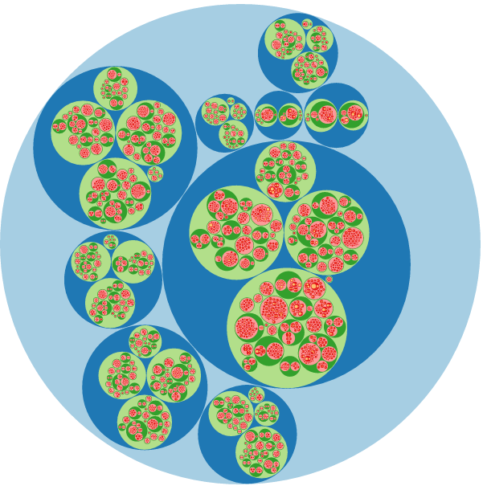
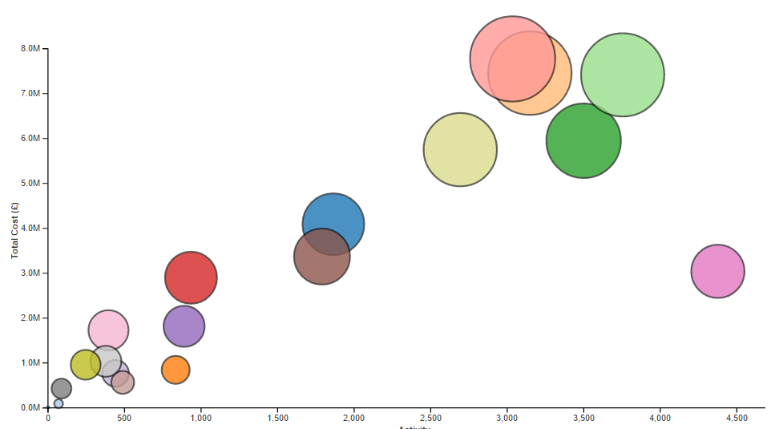
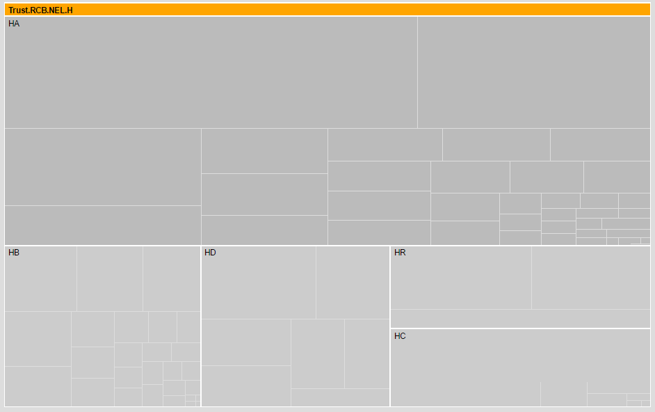

VOY CCG - BI Analysis Demo
Analysis of various 2015/16 datasets to demonstrate possibilities...
Outpatient Demo
Interactive Outpatient Analysis.
Click on elements of the charts to change the parameters
Takes a few seconds to load
Table at the bottom is for demo purposes only...
Where Our Money Goes
A nice pie chart showing York Trust 2015/16 spend broken down by point of delivery (and more)
Click on a segment to zoom in
Inpatient Demo
Shows our Inpatient spend by Provider and HRG
Non Interactive heatmap for illustrative purposes only
Takes more than a few seconds to load but looks pretty and is worth the wait...

York Inpatient Demo
Interactive Inpatient Analysis.
Click on circle to zoom in and out. Detailed to HRG so currently slow.
Takes a few seconds to load and to zoom in.
York Inpatient Demo
Exploding Circles idea...
Aggregated data with exploding cirles (Based on Gapminder)

Casemix Treemap
Treemap Showing Spend by Trust
Click on a square to zoom in. Click on orange bar to go up a level
